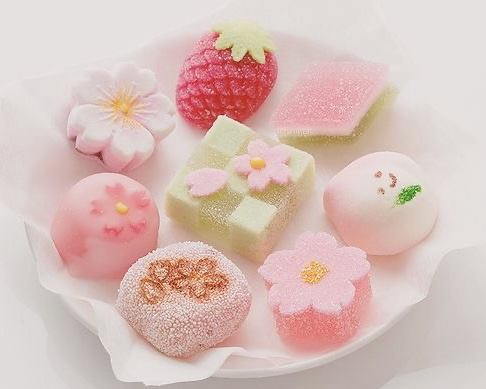
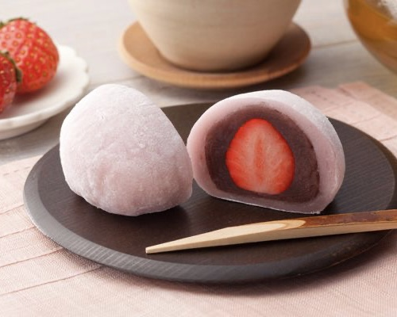
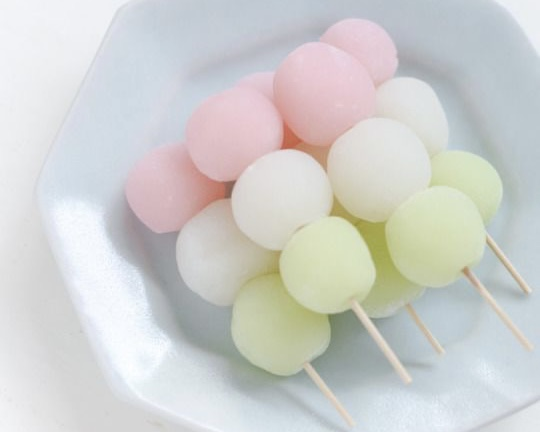
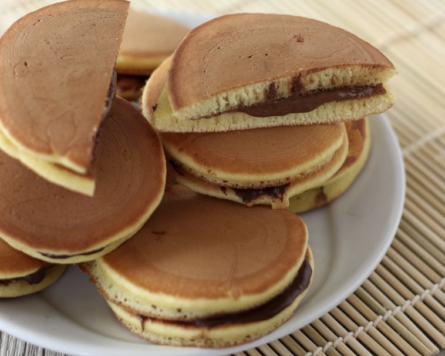
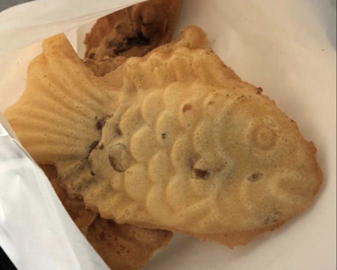

Over Mitsu Munch
Welkom op de wereld van Japanse zoetigheden! In dit kleurrijke en smaakvolle universum van
traditionele Japanse lekkernijen, ook bekend als Wagashi 和菓子, ontdek je een rijke
geschiedenis en een verrukkelijke diversiteit. Wagashi zijn meer dan alleen snoep; het zijn
kunstwerken die de seizoenen en de Japanse cultuur weerspiegelen. Van de delicate Namagashi,
handgemaakte zoetigheden die vaak de natuurlijke schoonheid van Japan nabootsen, tot de geliefde
Daifuku, een zachte rijstcake gevuld met zoete bonenpasta - elke hap neemt je mee op een culinaire
reis. Deze website biedt een venster naar deze betoverende wereld. Blader door de secties voor
recepten, waar je kunt leren hoe je deze heerlijke traktaties zelf kunt maken. Verken de rijke
geschiedenis achter deze eeuwenoude lekkernijen en duik in mijn persoonlijke reviews om je volgende
favoriete Wagashi te ontdekken. Of je nu een zoetekauw bent of gewoon nieuwsgierig naar nieuwe
smaken, deze website zal je smaakpapillen en je verbeelding prikkelen. Welkom en geniet van de
ontdekkingsreis!
Japanse zoetigheden, of Wagashi, zijn een essentieel onderdeel van de Japanse theecultuur en staan
bekend om hun verfijnde smaken en prachtige presentatie. Hier zijn enkele van de meest populaire
soorten Wagashi, elk met hun unieke eigenschappen:
Namagashi
Dit zijn verse, seizoensgebonden zoetigheden die vaak worden geserveerd tijdens de Japanse
theeceremonie. Namagashi zijn artistiek vormgegeven om seizoensgebonden thema's en de natuurlijke
schoonheid van Japan na te bootsen. Ze worden gemaakt van ingrediënten zoals rijstmeel en een zoete
bonenpasta vulling.

Daifuku/Mochi
Deze populaire Wagashi bestaan uit zachte rijstcake (mochi) gewikkeld rond een vulling van zoete
bonenpasta. Daifuku komt in verschillende varianten, waaronder aardbei (ichigo) en groene thee
(matcha).

Dango
Dango zijn kleine, kleverige dumplings gemaakt van rijstmeel. Ze worden vaak geserveerd op een
stokje en komen in verschillende smaken, waarbij ze vaak worden overgoten met een zoete saus of
bonenpasta.

Dorayaki
Dorayaki bestaat uit zoete bonenpasta tussen twee pannenkoekachtige patty's. Dit is een zeer
geliefde Wagashi en staat ook bekend als de favoriete snack van het anime-personage Doraemon.
Moderne varianten van Dorayaki kunnen gevuld zijn met andere vullingen zoals slagroom of custard.

Taiyaki
Taiyaki zijn visvormige snacks gemaakt van een beslag dat lijkt op pannenkoekbeslag, gevuld met
zoete bonenpasta. Moderne variaties omvatten vullingen zoals custardcrème of chocolade.

Deze zoetigheden zijn slechts een klein voorbeeld van de rijke verscheidenheid aan Wagashi. Elk heeft
zijn eigen unieke smaak en betekenis, en samen vormen ze een belangrijk onderdeel van de Japanse
culinaire traditie.